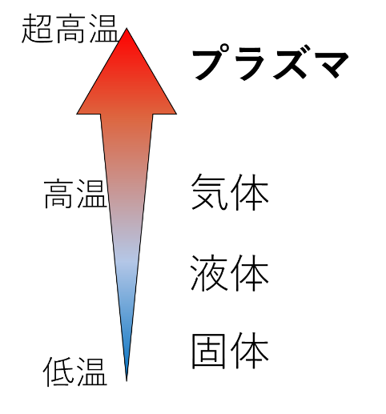
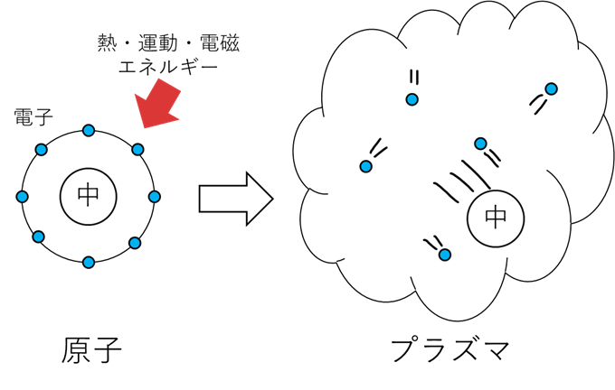
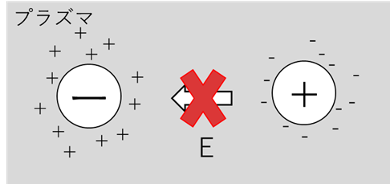
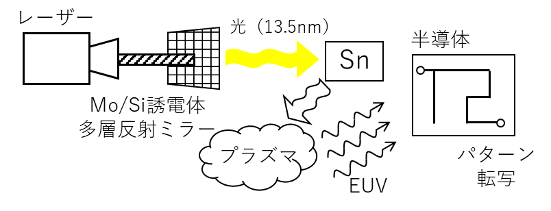

プラズマについて紹介するぜ
プラズマについて紹介するぜ
プラズマとは
・プラズマの定義
電離した気体のこと。気体の中性分子が電離して、陽イオンと電子に分かれて自由に飛び回っている状態のこと。プラズマ全体としては中性であり、物質の「第四の状態」としてい知られる。具体例として太陽、蛍光灯（水銀）、オーロラなどがある。

プラズマの作り方
プラズマは中性ガスを加熱するか強い電磁場にさらすことで発生させられる。

プラズマの性質
・電気伝導性
プラズマは電気を良く通す。これはプラズマ内で電子が自由に飛び回っているため。
・磁場との相互作用
プラズマ内のイオンや電子のような粒子は磁場の影響を受けやすい。
・デバイ遮蔽
プラズマ中に加えられた電磁ポテンシャル（電界）を打ち消す効果のこと。これは電極周辺に引き寄せられたプラズマからの電場と元の電場が打ち消し合うことで電磁ポテンシャルを遮蔽すること。

プラズマの産業的利用
・EUVリソグラフィー
半導体製造工程の「リソグラフィー」という、回路パターンを半導体に転写する工程での使用が注目されている。これはより小さく精密なパターンを転写するためには波長の小さい光が必要であり、プラズマから発生するEUV（極端紫外線）の波長が非常に短いため集積効率を向上させることが期待されている。

・核融合発電
高温・高密度の燃料プラズマによる熱核融合反応を利用した核融合発電には磁場閉じ込め型と慣性閉じ込め型がある。
磁場閉じ込め型の主な方式としてトカマク方式があり、これはドーナツ型の装置内で水素（三重水素）を加熱・プラズマ化させ、磁場を用いてプラズマを閉じ込めるものである。
慣性閉じ込め型にはレーザー方式があり、これは燃料を封入したペレットをレーザーにより瞬時に加熱・蒸発させ、爆発的に圧力が増加する爆縮という現象を発生させる方法である。この方法は爆縮によりプラズマがその場にとどまる一瞬の間に核融合を発生させる。
発電自体は超高温のプラズマの熱を利用したタービン発電のほかにMHD（Magneto-Hydro-Dynamics）発電という、磁界内にプラズマの荷電粒子（陽イオン・電子）をとおすことで誘導電流を発生させる方法もある。
プラズマの種類
・完全電離プラズマ
ほぼすべての粒子が電離した状態のプラズマ
・弱電離プラズマ
電離度の低いプラズマ。電離度は全粒子に対する電離した粒子の割合。
α=電離した粒子数/全粒子数
・大気圧プラズマ
大気圧下で発生したプラズマ
・真空プラズマ（低圧プラズマ）
真空（低圧）環境で発生したプラズマ